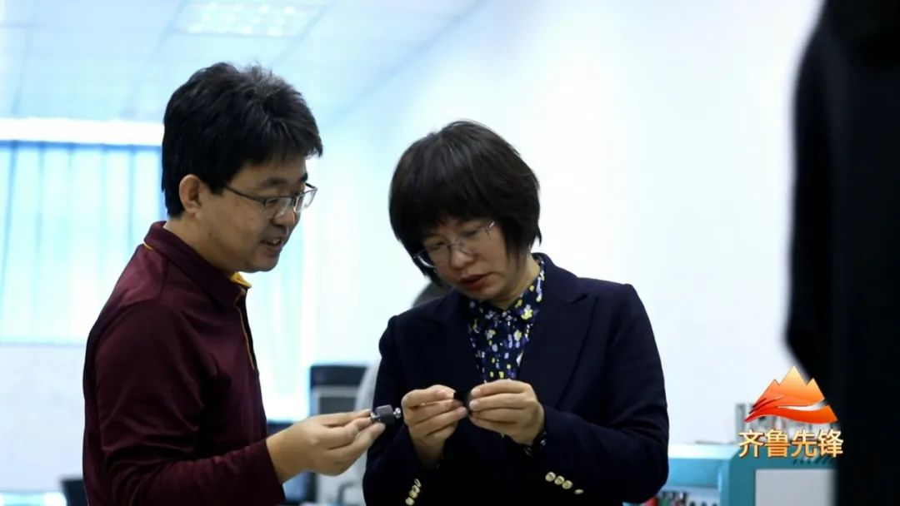
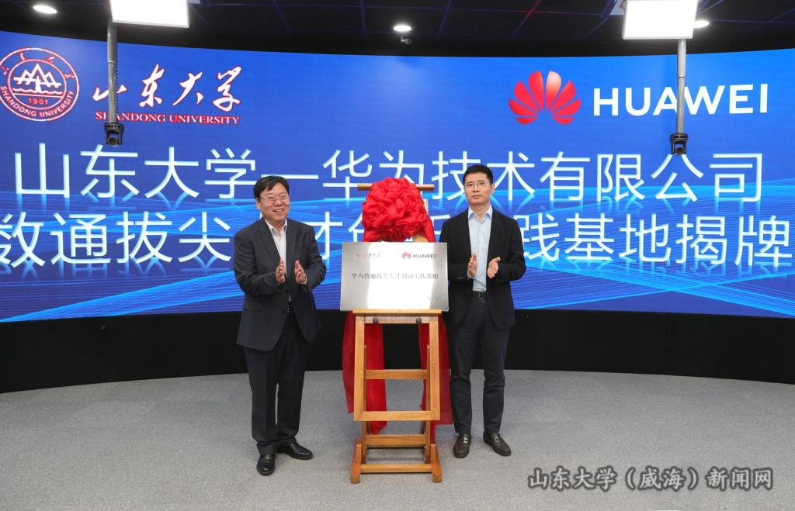
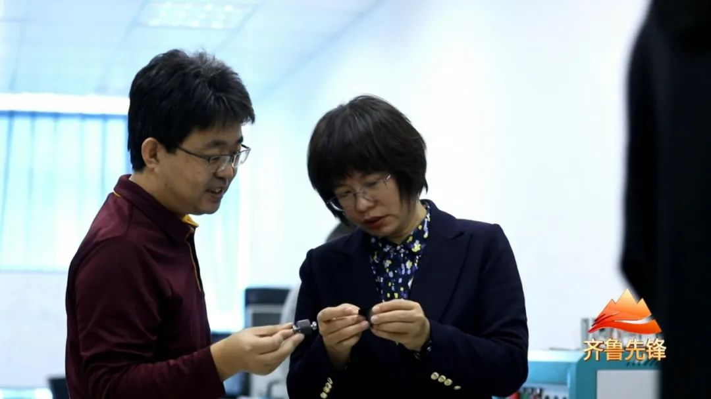
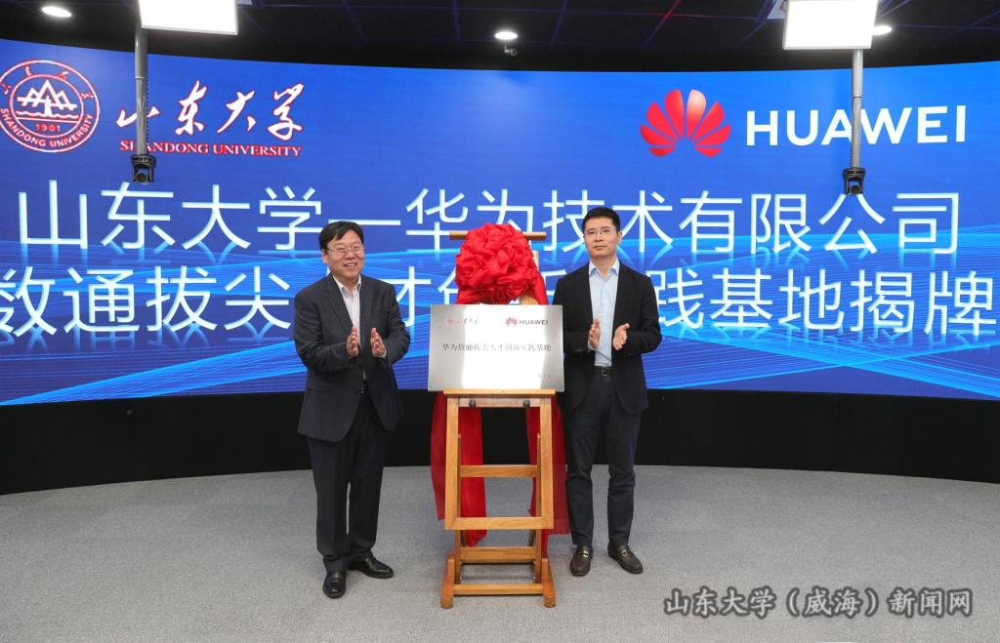

工作动态
更多>
 

- 山东大学优秀共产党员|机电与信息工程学院教授 王丽
- 机电与信息工程学院组织党员观看爱国主义电影《志愿军：雄兵出击》
- 机电与信息工程学院举办山东大学第八届齐鲁青年论坛— 智能制造与人工智能分论坛
- 机电与信息工程学院组织参观昆嵛山红色教育基地
- “学科交叉推进先进制造与智能装备学科创新融合发展”青年学术沙龙第二期成功举办
- 山大-有研稀土磁性材料及应用技术研究院揭牌成立
- 机电与信息工程学院“先进制造与智能装备”研究生暑期学校暨高端学术讲坛顺利闭幕
- 机电与信息工程学院赴济南市国资委相关企业进行合作洽谈
- 机电与信息工程学院联合威海市智能制造学会成功举办第二届暑期科技体验营
- 机电与信息工程学院教工党支部联合主题党日活动
- 机电与信息工程学院举办青年学术沙龙
- 校警企合作助力科技兴警，产学研融合促进地方发展
- 机电与信息工程学院与威海市公安局海岸警察支队举行校地合作共建启动仪式
- 机电与信息工程学院组织开展“党的二十大精神”学习竞赛活动
- 机电与信息工程学院研究生在线精品课程入选北京2022“奋进新时代”主题成就展
<< 123 >>
视频展播
更多>
<< 123 >>